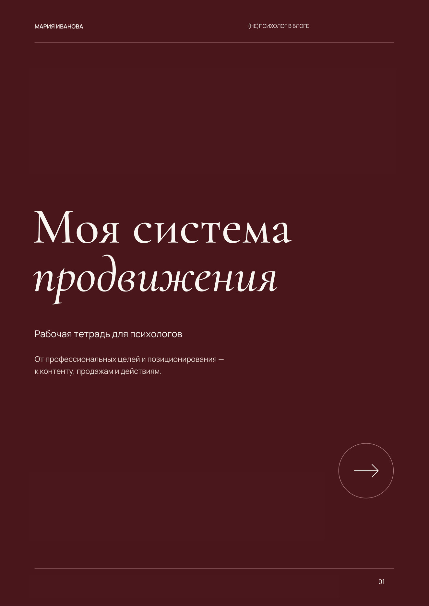
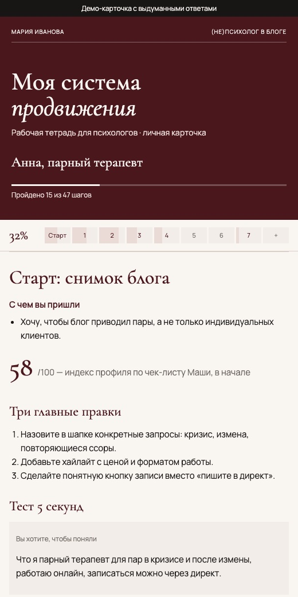

Рабочая тетрадь
PDF на 29 страниц: семь разделов, вопросы, чек-листы и мои примеры. Можно распечатать и заполнять от руки.
ЛЕКЦИЯ И РАБОЧАЯ ТЕТРАДЬ · САМОСТОЯТЕЛЬНО
Тетрадь для самостоятельной работы над блогом — с лекцией и чат-ботом, который проводит по ней как интервью.
PDF · 7 разделов · лекция · чат-бот в Telegram
1 900 ₽ / 20 €

Я понимаю, что не у всех есть возможность пойти в группу. Поэтому собрала эту рабочую тетрадь для самостоятельной работы. В ней — мои наработки, вопросы, которые я задаю участницам, и инструменты, которые считаю важными для блога психолога.
Здесь нет универсального рецепта и обязанности выкладывать контент каждый день. Я предлагаю посмотреть на свою практику, определить цели, разобраться в позиционировании, профиле, контенте и продажах — и выбрать действия, которые подходят именно вам.
PDF на 29 страниц: семь разделов, вопросы, чек-листы и мои примеры. Можно распечатать и заполнять от руки.
В ней я подробнее объясняю свою систему и то, как работать с упражнениями. Её удобно смотреть с тетрадью под рукой.
Задаёт вопросы тетради по одному. Отвечать можно текстом или голосом. Бот пересказывает, как понял ответ, и добавляет короткие разборы.
Все ваши ответы, цифры, сетка публикаций на 14 дней и итоговый разбор по всей тетради — на одной странице.
Всё, что вы подтверждаете в чате, собирается на одной странице: ответы, цифры, профиль, план и сетка публикаций. В конце — итоговый разбор по всей тетради: где вы сейчас, куда идёте, где ответы расходятся и с чего начать.
Карточка открывается только в вашем Telegram. Вот как она выглядит — с выдуманными ответами.

Цели практики, ревизия доходов, финансовая ёмкость, стратегия на 3, 5 и 10 лет.
Кто вы как специалист, как вас рекомендуют другим, границы в блоге.
Шапка, пост-знакомство, чек-лист профиля психолога.
Рост аудитории или продажи — и что важнее именно сейчас.
Форматы, банк идей, четыре вида контента.
Как человек приходит к записи и как приглашать в работу, не нарушая свои ценности.
Один фокус на 30 дней, конкретные действия и сверка через месяц.
Оплачиваете на этой странице — картой российского банка или иностранной.
Получаете PDF, лекцию и личную ссылку на чат-бота.
Проходите тетрадь в своём темпе: по шагу в день или за несколько вечеров.
Через 30 дней бот напомнит сверить, что получилось.
Ответы в боте и карточку видите только вы. Я вижу лишь, сколько человек на каком шаге. Карточка открывается только в вашем Telegram — по пересланной ссылке её не увидят. Пожалуйста, не пишите туда данные клиентов.
САМОСТОЯТЕЛЬНАЯ РАБОТА
Этот формат — для самостоятельной работы, без живых встреч и личной обратной связи. Если вам важны поддержка и разборы со мной, посмотрите программу группы «(Не)психолог в блоге».
После оплаты вы получите PDF, лекцию и личную ссылку на чат-бота.
Остались вопросы — напишите мне в Telegram.